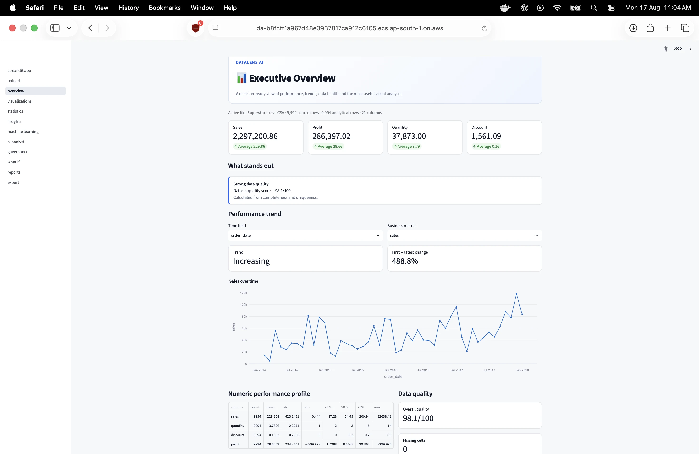
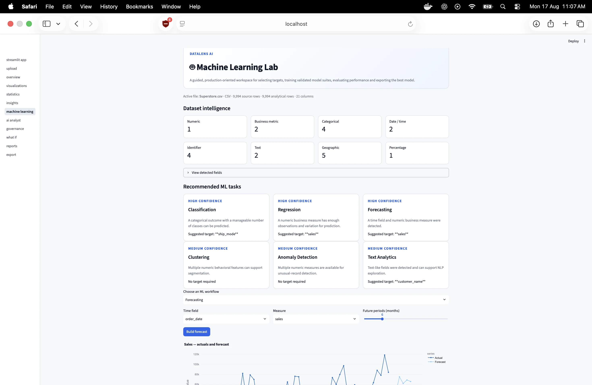
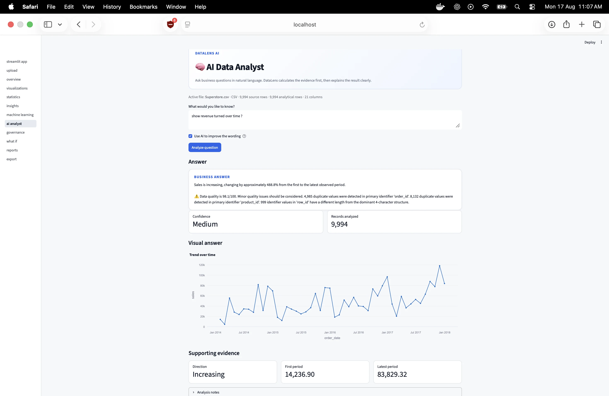

A complete analytical lifecycle.
DataLens AI is designed as more than a dashboard. It connects data ingestion, semantic understanding, quality analysis, exploratory data analysis, statistics, machine learning, forecasting, explainability, AI-assisted interpretation, what-if scenarios, governance, reporting and export inside one analytical workspace.
From raw data to decision support.
The Problem
Business datasets often require multiple disconnected tools before an analyst can move from raw data to a defensible decision. DataLens brings the major stages of that analytical workflow into a single workspace.
How it works
DataLens combines deterministic analytics, statistical analysis, machine learning, forecasting, explainability and AI-assisted interpretation. It also supports scenario exploration, governance, reporting and export so analytical results can move closer to practical decision-making.
From Data to Decision
The project is containerized with Docker and documented for deployment on AWS ECS/Fargate, with a Streamlit workspace providing the interactive application interface.
Inside the Product.


